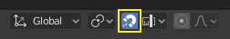
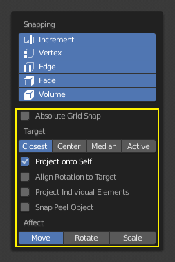
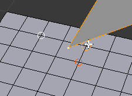

吸附¶
在Blender中可以使用两种类型的捕捉操作。第一种类型将你的选择或光标捕捉到给定的点，第二种类型类型是在转换（平移，旋转，缩放）期间使用并将你的选择捕捉到场景中的元素。
变换吸附¶
参考
| 模式: | 物体，编辑和姿势模式 |
|---|---|
| 标题栏: | |
| 快捷键: | Shift-Tab |
通过切换3D视图的标题按钮中的磁铁图标，可以在变换期间将物体和网格元素捕捉到各种类型的场景元素。

3D视图标题栏中的磁铁图标（启用时为蓝色）。
吸附元素¶
参考
| 模式: | 物体，编辑和姿势模式 |
|---|---|
| 标题栏: | |
| 快捷键: | Shift-Ctrl-Tab |

吸附元素菜单。
- 增量
- 捕捉到栅格点。在正交视图中，对齐增量根据缩放级别而变化。
- 顶点
- 捕捉到网格物体的顶点。
- 边
- 吸附到网格物体的边缘。
- 面
- 吸附到网格对象中的面的表面。有用于重心拓扑。
- 体积
吸附到鼠标光标下方第一个物体的体积内的区域。与其他选项不同，这一个控制变换元素的深度（即当前视图空间中的Z坐标）。通过切换吸附目标菜单右侧的按钮（见下文），在确定体积中心时，目标物体将被视为一个整体。
Note
在这种情况下，栅格并不意味着显示可视栅格线。吸附将使用显示的栅格的分辨率，但是所有变换都是相对于初始位置（吸附操作之前）。
Tip
用 Shift-LMB 点击多个吸附元素可以开启多种吸附模式。
吸附目标¶
如果将 顶点，边，面 或 体积 选为吸附元素，则吸附目标选项将变为活动状态。这些决定选择什么部分吸附到目标物体。
- 活动项
- 将活动元素（编辑模式中的顶点，物体模式中的物体）移动到目标。
- 质心
- 将选择的质心移至目标位置。
- 中心
- 将当前变换中心移动到目标。可以使用选中项 -> 游标 (偏移)进行吸附。
- 邻近
- 将选择的最近点移动到目标。

邻近。 |

激活。 |

质心。 |
其他吸附选项¶

如上图中黄色突出显示的区域所示，吸附目标旁边有额外的可以使用其他控件来修改吸附行为的附加项。这些选项在模式（物体和编辑）以及吸附元素之间有所不同。可用的四个选项是：
- 绝对网格吸附
- 仅适用于增加选项。吸附到栅格，而不是以相对于当前位置的增量进行吸附。
- 投射到自身
- 适用于编辑模式中处理点，线，面和体积的情况下。吸附元素会指向对象自身的网格。
- 将旋转与吸附目标对齐
- 适用于点线面和体积。当吸附影响旋转，对齐将关联吸附目标旋转。
- 投射到独立元素
- 适用于吸附到面。投射其它物体表面上的独立元素。
- 吸附剥落物体
- 适用于吸附到体积。当寻找体积中心时将剥落的多个物体视为一个整体。
- 影响
- 限制吸附到转换类型的影响
多个吸附目标¶

多个吸附目标。
一旦用吸附变换一个选择（不只是当按住 Ctrl），您可以按 A 来标记当前的吸附点，然后进行标记尽可能多的其他吸附点，你想和选择物体将被吸附到所有标记点的平均位置。
多次标记一个点将使它位置上更加平均。